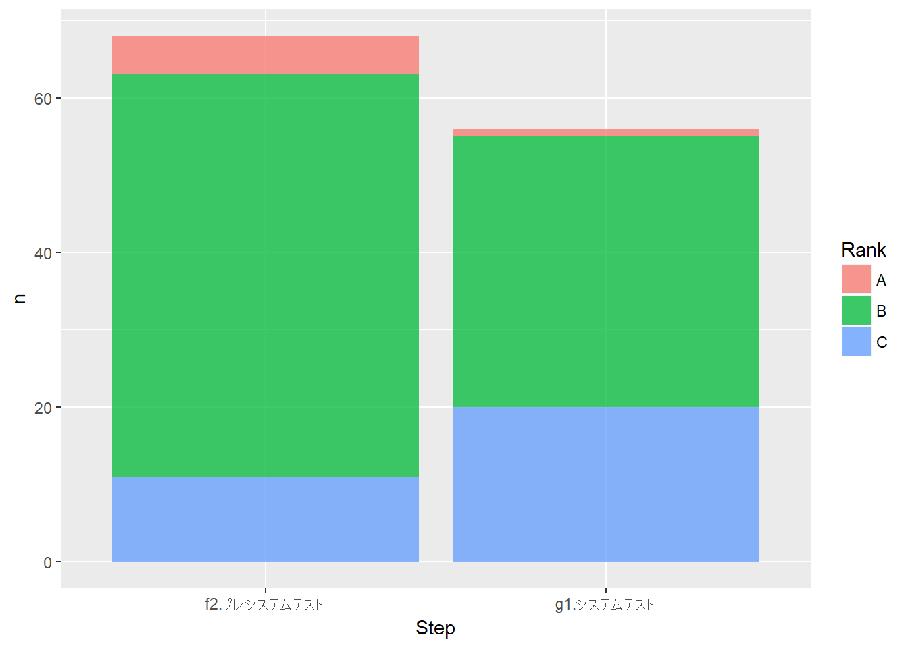

「dplyrのすゝめ」ではデータの扱い方を学びましたが、本チュートリアルではODC分析における可視化を例にして[R][R]で可視化処理するために必要な基礎知識を学びます。なお、本チュートリアルを実行するための必要な環境についてはこちらで確認して下さい。
なお、本ページではR version 3.4.4 (2018-03-15)の標準パッケージ以外に以下の追加パッケージを用いています。
| Package | Version | Description |
|---|---|---|
| tidyverse | 1.2.1 | Easily Install and Load the ‘Tidyverse’ |
また、本ページでは以下のデータセットを用いています。
| Dataset | Package | Version | Description |
|---|---|---|---|
| odc | N/A | N/A | ODC分析用ダミーデータ |
odcId | ID 要約 | Abstruct or Subject or Title ステータス | Status 解決状況 | Result 発生日 | Date 更新日 | Update 障害ランク | Rank 再現性 | Reproducibility 欠陥検出工程 | Step 発生トリガー | Trigger 欠陥実装タイプ | I_Type or Qualifier 欠陥混入時期 | D_Step or Age 欠陥タイプ | D_Type デグレード | Degrade テスト番号 | Test_No
odc %>%
dplyr::select(Step = '欠陥検出工程', D_Type = '欠陥タイプ') %>%
# dplyr::filter(D_Type != "（障害ではない）") %>%
dplyr::count(Step, D_Type) %>%
ggplot2::ggplot(ggplot2::aes(x = Step, y = n, fill = D_Type)) +
ggplot2::geom_bar(stat = "identity", alpha = 0.75)odc %>%
dplyr::select(Step = '欠陥検出工程', Rank = '障害ランク',
D_Type = '欠陥タイプ') %>%
dplyr::filter(D_Type != "（障害ではない）") %>%
dplyr::count(Step, Rank) %>%
print() %>%
ggplot2::ggplot(ggplot2::aes(x = Step, y = n, fill = Rank)) +
ggplot2::geom_bar(stat = "identity", alpha = 0.75)## # A tibble: 6 x 3
## Step Rank n
## <chr> <chr> <int>
## 1 f2.プレシステムテスト A 5
## 2 f2.プレシステムテスト B 52
## 3 f2.プレシステムテスト C 11
## 4 g1.システムテスト A 1
## 5 g1.システムテスト B 35
## 6 g1.システムテスト C 20
odc %>%
dplyr::select(D_Type = '欠陥タイプ', Trigger = '発生トリガー') %>%
# dplyr::filter(D_Type != "（障害ではない）") %>%
dplyr::count(D_Type, Trigger) %>%
print() %>%
ggplot2::ggplot(ggplot2::aes(x = Trigger, y = n, fill = D_Type)) +
ggplot2::geom_bar(stat = "identity", alpha = 0.75) +
ggplot2::coord_flip()## # A tibble: 45 x 3
## D_Type Trigger n
## <chr> <chr> <int>
## 1 （わからない） （わからない） 1
## 2 （わからない） f-i.1.基本 1
## 3 （わからない） f-i.3.操作順序依存 1
## 4 （わからない） f-i.5.負荷・ストレス 1
## 5 （わからない） f-i.8.構成 1
## 6 （障害ではない） （わからない） 1
## 7 （障害ではない） （障害ではない） 1
## 8 （障害ではない） f-i.1.基本 4
## 9 （障害ではない） f-i.2.組合せ 2
## 10 （障害ではない） f-i.4.複数機能の相互作用 2
## # ... with 35 more rowsodc %>%
dplyr::select(Status = 'ステータス', Result = '解決状況', Date = '発生日',
Rank = '障害ランク', Step = '欠陥検出工程',
Trigger = '発生トリガー', Type = '欠陥実装タイプ') %>%
dplyr::count(Date, Trigger) %>%
print() %>%
ggplot2::ggplot(aes(x = Date, y = n)) +
ggplot2::geom_bar(aes(fill = Trigger), stat = "identity")odc %>%
dplyr::select(Status = 'ステータス', Result = '解決状況', Date = '発生日',
Rank = '障害ランク', Step = '欠陥検出工程',
Trigger = '発生トリガー', Type = '欠陥実装タイプ') %>%
dplyr::count(Date, Trigger) %>%
tidyr::spread(key = Trigger, value = n) %>%
dplyr::mutate_if(is.numeric, funs(replace(., is.na(.), 0))) %>%
dplyr::mutate_if(is.numeric, cumsum) %>%
tidyr::gather(key = Trigger, value = n, -Date) %>%
ggplot2::ggplot(aes(x = Date, y = n)) +
ggplot2::geom_bar(aes(fill = Trigger), stat = "identity")odc %>%
dplyr::select(Status = 'ステータス', Result = '解決状況', Date = '発生日',
Rank = '障害ランク', Step = '欠陥検出工程',
Trigger = '発生トリガー', Type = '欠陥実装タイプ') %>%
dplyr::filter(Type != "（障害ではない）") %>%
print() %>%
dplyr::count(Date, Trigger) %>%
print() %>%
tidyr::spread(key = Trigger, value = n) %>%
dplyr::mutate_if(is.numeric, funs(replace(., is.na(.), 0))) %>%
dplyr::mutate_if(is.numeric, cumsum) %>%
tidyr::gather(key = Trigger, value = n, -Date) %>%
ggplot2::ggplot(aes(x = Date, y = n)) +
ggplot2::geom_bar(aes(fill = Trigger), stat = "identity")odc %>%
dplyr::select(Status = 'ステータス', Result = '解決状況', Date = '発生日',
Rank = '障害ランク', Step = '欠陥検出工程',
Trigger = '発生トリガー', Type = '欠陥実装タイプ') %>%
dplyr::filter(Type != "（障害ではない）") %>%
dplyr::count(Date, Rank) %>%
tidyr::spread(key = Rank, value = n) %>%
dplyr::mutate_if(is.numeric, funs(replace(., is.na(.), 0))) %>%
dplyr::mutate_if(is.numeric, cumsum) %>%
tidyr::gather(key = Rank, value = n, -Date) %>%
ggplot2::ggplot(aes(x = Date, y = n)) +
ggplot2::geom_bar(aes(fill = Rank), stat = "identity")odc %>%
dplyr::select(Status = 'ステータス', Result = '解決状況', Date = '発生日',
Rank = '障害ランク', Step = '欠陥検出工程',
Trigger = '発生トリガー', Type = '欠陥実装タイプ') %>%
dplyr::filter(Type != "（障害ではない）") %>%
dplyr::count(Date, Step) %>%
tidyr::spread(key = Step, value = n) %>%
dplyr::mutate_if(is.numeric, funs(replace(., is.na(.), 0))) %>%
dplyr::mutate_if(is.numeric, cumsum) %>%
tidyr::gather(key = Step, value = n, -Date) %>%
ggplot2::ggplot(aes(x = Date, y = n)) +
ggplot2::geom_bar(aes(fill = Step), stat = "identity")odc %>%
dplyr::select(Status = 'ステータス', Result = '解決状況', Date = '発生日',
Rank = '障害ランク', Step = '欠陥検出工程',
Trigger = '発生トリガー', Type = '欠陥実装タイプ') %>%
dplyr::filter(Type != "（障害ではない）") %>%
dplyr::count(Date, Type) %>%
tidyr::spread(key = Type, value = n) %>%
dplyr::mutate_if(is.numeric, funs(replace(., is.na(.), 0))) %>%
dplyr::mutate_if(is.numeric, cumsum) %>%
tidyr::gather(key = Type, value = n, -Date) %>%
ggplot2::ggplot(aes(x = Date, y = n)) +
ggplot2::geom_bar(aes(fill = Type), stat = "identity")